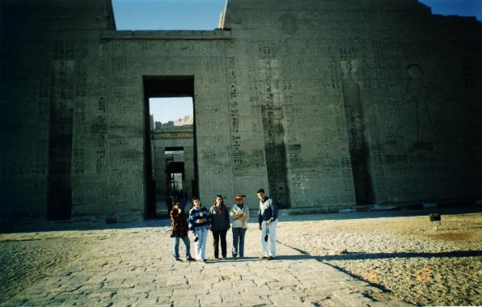

|
Bishoy Smart Design |
Luxor & Aswan Tour |
||
|
17 |
At Edfo temple (Onsi's) |
||
|
It's a picture for the temple I'm the one behind the camera Was just walking and found them standing like that, not waiting for a photo. Think they are always PHOTO-ORIENTED |
 |
||

Mail me on:
bishoy_adel@hotmail.com